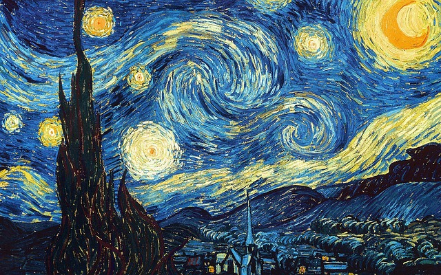
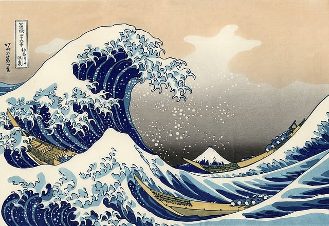
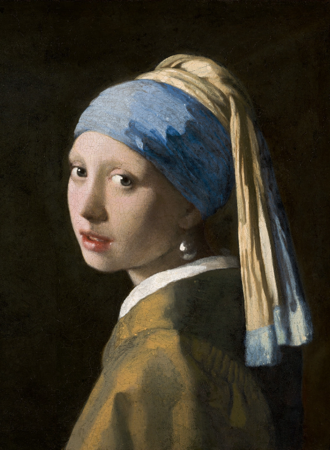
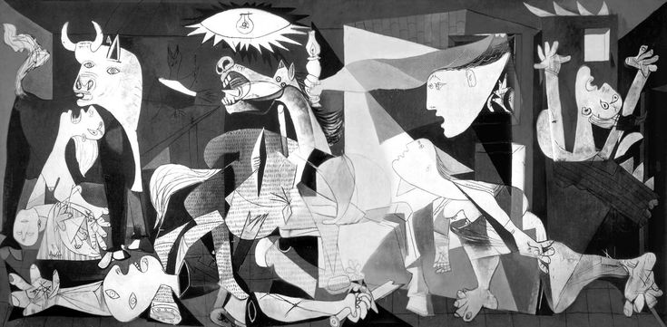
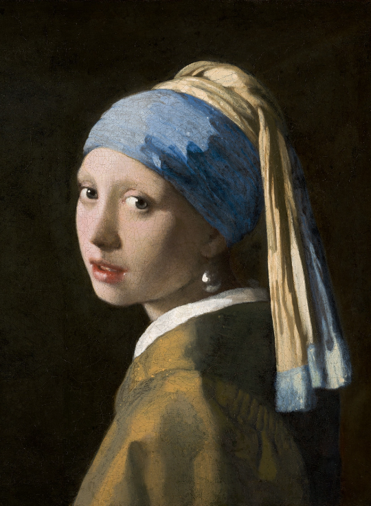
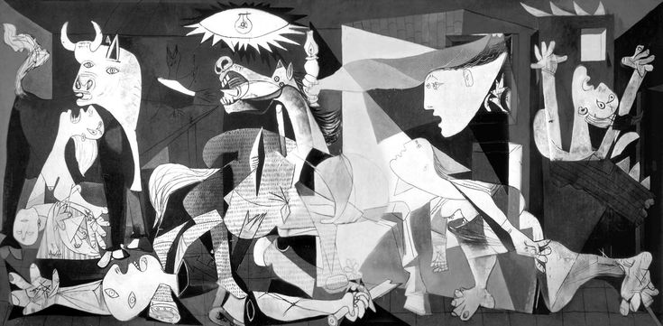

Acesse as outras páginas:
A arte, em sua rica vastidão, transcende definições simplistas. Ela é a
expressão da alma humana, tecida em cores vibrantes, melodias comoventes,
movimentos graciosos e palavras que tocam o coração.
Através da arte, exploramos a beleza, desafiamos convenções, narramos
histórias e conectamo-nos com a nossa humanidade mais profunda. Seja na
grandiosidade de uma catedral gótica ou na simplicidade
de um desenho infantil, a arte nos convida a transcender o ordinário e
mergulhar em um universo de sensações e reflexões. Através dela,
questionamos o mundo ao nosso redor, expressamos nossas
emoções mais
íntimas e deixamos uma marca indelével no tempo e no espaço.
Galeria de imagens.
 The Great Wave (Katsushika Hokusai )
 


